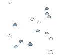

基本網頁製作 / CSS 串接樣式表入門
連結
- JSBIN 網頁實驗與源碼分享服務
- JSFiddle / 網頁練習與編輯工具
- loading.css 動畫樣板套件說明文件
- Can I Use? 瀏覽器相容性速查工具
- Google Font 網頁字體服務
- Webdings 字型速查表
- FontAwesome 字型圖示套件
CSS 基本使用方式
要在 HTML 中使用 CSS ，通常透過下列三種方式：
- 使用 <link> 標籤載入外部樣式表
- 使用 <style> 標籤將樣式表寫在 HTML 中
- 利用標籤的 style 屬性直接為標籤標記樣式 ( 亦稱為 inline style )
Inline Style
在撰寫任何標籤時，我們都可以額外加入一個 "style" 屬性來為標籤加上樣式。例如下例的 H1 標籤將會顯示為紅色：
<h1 style="color:red"> Hello World! </h1>
樣式表的寫法請參照後面解說。
<style> 標籤
我們可以將樣式表集中在同一個地方，再透過「CSS Selector」指定樣式表作用的對象。只要將樣式表寫在 style 標籤中即可：
<style type="text/css">
h1 { color: red }
</style>樣式表的寫法請參照後面解說。
<link> 標籤
為了管理方便，我們常會將 CSS 獨立於 HTML 之外，以不同檔案的形式透過引入來使用。這可以利用 <link> 標籤來達成：
<link rel="stylesheet" type="text/css" href="<你的CSS檔案位置>">
樣式表的寫法請參照後面解說。
CSS 基本語法
CSS 主要用途即為為網頁元素增加樣式，各種樣式如背景色、大小等都有對應的名字。為各種樣式指定適當的值即為樣式表的基本結構，例如下例將背景樣式設定為紅色：
background: red
我們用「 <樣式名>: <樣式值> 」這樣的方式來做樣式的指定。當有多組樣式同時要指定時，在各組指定間加上分號，便可以把多組樣式結合成起來；下例同時設定了背景色、文字色、邊框寬度三總屬性：
background: red; color: white; margin: 20px;
此即為寫在 Inline Style 中的樣式表的格式。為了方便重覆利用這些樣式，我們可以將這些樣式統一寫在一個地方，然後搭配 CSS Selector 來指定要套用這些樣式的標籤，此即稱為樣式表。下例即為樣式表的基本範例：
p {
background: red;
color: white;
}上例中的「p」即為 CSS Selector。上例區塊重覆使用，便可針對多組標籤套用樣式：
p {
background: red;
color: white;
}
h1 {
background: orange;
}將之寫入 HTML 的基本範例如下：
<style type="text/css">
p {
background: red;
color: white;
}
h1 {
background: orange;
}
</style>常見的 CSS 基本樣式
有些 CSS 樣式相當複雜，但也有許多樣式只是單純變更顏色或位置，這裡先針對簡單的基本樣式做表列。
文字樣式
| 樣式名 | 可能的值 | 用途 |
| color | <顏色> | 字體顏色。顏色有以下幾種使用模式：
|
| font-size | <數值>px 或 <數值>em | 字體大小。利用 <數值>em 指定相對大小， <數值>px 指定絕對大小 |
| font-weight | light / bold / heavy 等, 或數值 | 字體粗細。亦可用 100 / 200 ... / 900 方式來指定，越大越粗。見下例： font-weight: 100font-weight: 300font-weight: 500font-weight: 700font-weight: 900 |
| font-family | 見右 | 指定文字要用的字體。預設有：
亦可載入網路字型，可參考 Google Font ( https://fonts.google.com/ ) |
| text-align | left right center justify | 文字水平對齊。靠左、靠右、置中、展開等。 |
| vertical-align | top bottom middle 等 | 文字垂直對齊 |
文字操作練習
1. 試著利用 Google Font 載入並設定一種字型。使用下面這段文字做練習：
"Are you ready for a commercial? They gonna sell you stu-u-u-u-uff! There'll be one for cars, there'll be one for beer! You know you want to run out and buy them! So don't change the channel, everything's alright! All my rowdy friends are here on Saturday Night!"
2. 利用 切出數段文字，分別給與「紅色」、「粗體」、「放大」等效果，例如：
"Are you ready for a commercial? They gonna sell you stu-u-u-u-uff! There'll be one for cars, there'll be one for beer! You know you want to run out and buy them! So don't change the channel, everything's alright! All my rowdy friends are here on Saturday Night!"
尺寸與背景
| 樣式名 | 可能的值 | 用途 |
| width | <數值>px, 如 30px | 設定區塊寬度。 ( 常用在 <div> 標籤上 ) |
| height | <數值>px, 如 20px | 設定區塊高度。 ( 常用在 <div> 標籤上 )。範例： <div style="width:100px;height:100px;"></div> |
| background-color | <顏色> | 設定背景色 |
| background-image | url(/path/to/image) | 設定背景影象。使用範例:background-image: url(http://xinmeti.co/04/img/1.jpg) |
| background-repeat | 見右 | 設定背景影像是否重覆描繪。可能的值如下：
|
| background-attachment | fixed / scroll | 設定背景影像是否要固定不動 |
| background-position | 見說明 | 背景圖的靠齊方式。可指定兩個值，第一個值為 X 方向的靠齊，第二個值為 Y 方向。兩個值以空白分隔。 X 方向的值可以是 left, right 或 center。 Y 方向則可能是 top, bottom 或 center。 範例 ( 靠左上對齊 )： background-position: left top |
背景操作練習
首先先試做一方形區塊 ( 長寬 200px x 200px )，將其背景填滿紅色 (#f00)，如下例：
接著試使用  ( http://xinmeti.co/05/img/cloud.gif ) 這張圖練習設定背景，並做出下列效果：
{kind=link}
邊框樣式
| 樣式名 | 可能的值 | 用途 |
| border-width | <數值>px | 方塊的外框粗細。 |
| border-style | solid / dashed / dotted / none | 外框樣式，可以是虛線、點等等不同樣式。 |
| border-color | <顏色> | 外框顏色。 |
border-left-width border-left-style border-left-color | 見右 | 左邊的外框樣式。將 left 改為 right, top, bottom 可設定相對應的邊框。 |
| border-radius | <數值>px 或 百分比 | 方塊圓角。若需要對四個角落分別設定，則可以寫四次，將依「左上」，「右上」，「左下」，「右下」的順序繪製。範例： <div style="width:40px;height:40px;border-radius:5px 10px 15px 20px"></div> 上例的結果： |
| box-shadow | 見右 | 區塊的陰影。基本設定的模式如下： [X位移] [Y位移] [模糊量] [擴大量] [顏色] 例如： box-shadow: 2px 2px 4px 4px #000 |
邊框操作練習
1. 首先試做兩區塊，使用不同的邊框顏色與樣式，例如：
2. 試著將其中一個改為圓形，另一個改為扇形：
3. 最後，打上藍色的陰影：
顯示模式與定位方法
網頁標籤常用的顯示模式 ( display ) 分為以下數種：
- inline - 行內模式，如同一般文字般，隨著文字流排版。
- block - 區塊模式，可設定長寬，不隨文字流排版。
- inline-block - 行內區塊，隨著文字流排版，也可以設定長寬大小。常配合 vertical-align 做垂直對齊。
其他還有 flex, table, list-item, grid 等各種顯示模示。
網頁標籤常用的定址模式 ( position ) 包含以下幾種：
- static - 預設的位置，無法移動。
- relative - 相對於預設的位置，可以再追加位移。
- absolute - 絕對位置，相對於上層相對式定址的標籤
- fixed - 固定位置，相對於瀏覽器視窗外框。
定址模式常搭配下列幾種屬性使用：
| 樣式名 | 可能的值 | 用途 |
| left | <數值>px | 區塊相對於左方原點的位移量 |
| top | <數值>px | 區塊相對於上方原點的位移量 |
| z-index | <數值> | 區塊互相覆蓋時，z-index 較大的區塊會蓋掉 z-index 較小的區塊。 |
| margin | <數值>px | 邊緣留白的量。亦可用 margin-left, margin-right 等方式指定各別方向的邊緣留白。此留白位於區塊邊界之外。 |
| padding | <數值>px | 邊緣留白的量。亦可用 padding-left, padding-right 等方式指定各別方向的邊緣留白。此留白位於區塊邊界之內。 |
區塊邊界的模型可以參考這張圖來理解：

區塊操作練習
試利用四個區塊畫出類似下圖的笑臉：
半圓形的區塊可利用長方形搭配兩個角落的圓角來繪製